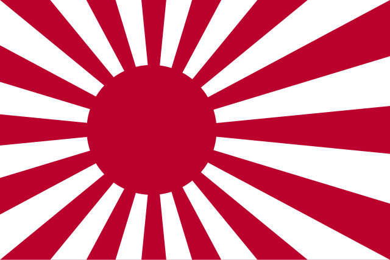

An informative document on the Bushido Code
Bushidō (武士道, "the way of the warrior") is the code of conduct for the samurai class and has a few variations, not to be confused with Budō (武道) or Bujutsu (武術), which are the overall teaching of Martial arts and self-improvement.
Origin of the Bushido and Samurai:
The term 'bushido' first appeared as an unwritten moral code from the 12th century for the shogun. It wasn't until the 16th century, in the Japanese military record Kōyō Gunkan, did the term 'bushido' first appeared. And since then, the Bushido code has become more developed. Many of its ideas and influence came from Shinto, a religion originating from Japan, and Zen Buddhism. By the mid-19th century, its principles had become a code of ethics throughout Japan, with loyalty's highest priority being the Emperor. But this was abandoned after their defeat in 1945 in WWII. In more modern times, elements of are used in training martial arts.
There are several things this code teaches, which teach not just Martial arts, but the way of life as well. Martial arts include:
- Kendo (剣道), a modern version of Kenjutsu (剣術)
- Iaidō (居合道), a Japanese Martial art focused on being prepared to fight at a moment's notice, and has four main components: The controled, smooth drawing the sword from its scabbard, cutting or striking the opponent, shaking the blood off of the blade, and replacing the sword in its scabbard
- Aikido (合気道)
- Jōdō (杖道)
-
-
-
-
-
-
These are the 7 virtues taught in Bushido:
- Honor (名誉, meiyo): A samurai's most important virtue, encompassing personal integrity and a strong sense of duty. As well as acknowledging moral responsibility. To win in a battle and to die in battle are both honorable. And if someone were to surrender or lose a battle and survive, the only way they could regain their honor was to commit Seppuku (切腹), also called harakiri (腹切り), which is a form of ritualistic suicide via disembowelment.
- Loyalty (忠義, chūgi): Unwavering devotion to one's family, country, but more importantly, their lord, which is more valued than loyalty toward one's family, even if it means harm to them.
- Courage (勇氣, yūki): Bravery in the face of danger and adversity, both physical and moral. This means not just being able to perceive what is right and wrong, but to act on it.
- Respect (禮, rei): Courtesy and politeness towards others, especially those of higher status, but ot excluding those with lower status
- Honesty (誠, makoto): Truthfulness and integrity in all dealings. Doing the right thing even when no one is watching.
- Benevolence (仁, jin): Being compassionate and kind towards others is important
- Rectitude (義, gi): Acting with justice and righteousness is important to samurai and how they make decisions.

How the Bushido Code affected World War 2
The greatest affect
Sources:
- “The History of the Bushido Code: Principles of Samurai Culture.” Invaluable, 31 July 2019, www.invaluable.com/blog/history-of-the-bushido-code.
- “Samurai | Meaning, History, & Facts.” Encyclopædia Britannica, 5 Sept. 2018, www.britannica.com/topic/samurai.
- History.com Editors. “Samurai and Bushido - Code, Japan & Meaning | HISTORY.” HISTORY, 28 Oct. 2009, www.history.com/articles/samurai-and-bushido.
- Wikipedia Contributors. “Bushido.” Wikipedia, Wikimedia Foundation, 7 Mar. 2019, en.wikipedia.org/wiki/Bushido.
- “Iaido.” Wikipedia, 13 Apr. 2021, en.wikipedia.org/wiki/Iaido.